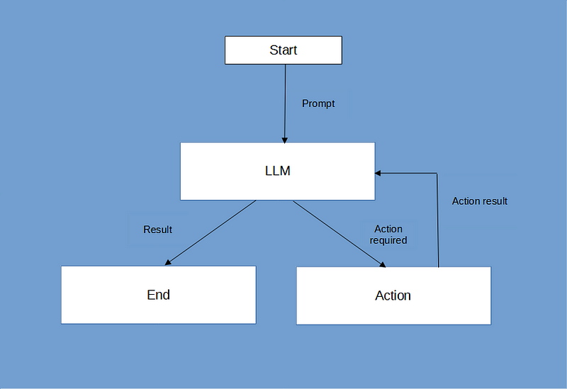
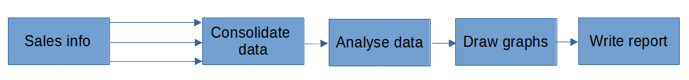
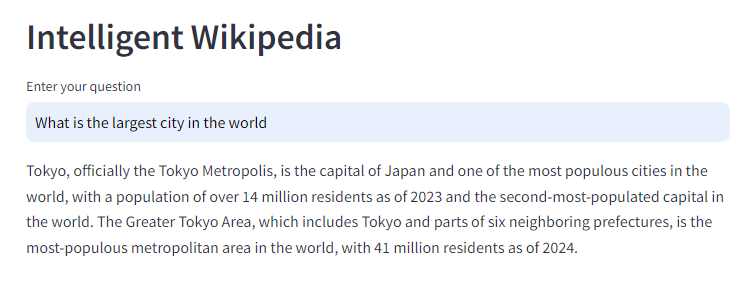
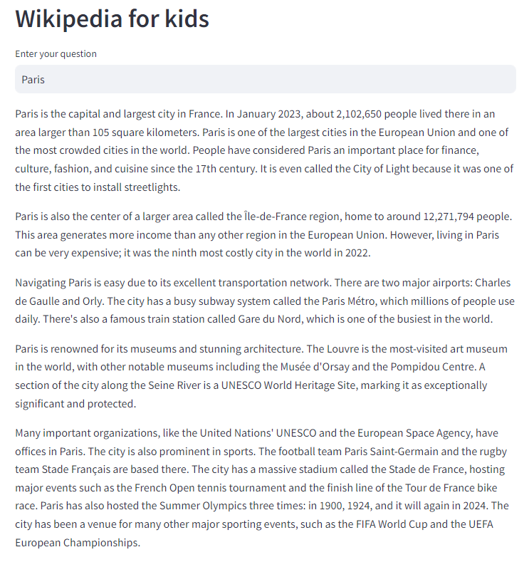

AI Agents vs. AI Pipelines: a Practical Guide to Coding Your LLM Application
We use CrewAI to create apps that demonstrate how to choose the right architecture for your LLM application

An agent and a pipeline — based on an image created with Microsoft Bing Image Creator
We can think of an AI agent as an LLM with access to external tools; it runs in a loop, making decisions about how to behave and what tools to use at each iteration.
In doing this, the agent can solve much more complex problems than a conventional LLM app. (I explored how to build such an agent from scratch in the article How to Build a ReAct AI Agent with Claude 3.5 and Python)
AI Agents are powerful and a long step beyond a conventional chat application. But they are not always the right solution.
Sometimes a sequence of more conventional functions is more appropriate. We can think of this type of application as a pipeline, where a solution is developed by passing the output of one function as the input to the next.
In this article, we will explore the use of AI agents and pipelines and what types of applications they are most suited to. We will use the CrewAI open-source framework to create the LLM logic and build a simple front end in Streamlit for an online app.
Apps for agents, apps for pipelines
Let’s think about a couple of different apps.
A customer logs on to a manufacturer’s website to solve a problem that they are having with their washing machine. He is greeted by an AI agent that wants to help. What make and model is the machine? What are the symptoms? Are the clothes still dirty? Is there water on the floor? Is it refusing to spin?
There are a whole load of questions that the agent might ask to solve whatever problem the customer has. And subsequent questions will depend on previous answers.
Here, an AI agent is a great solution. It needs to run in a loop gathering information until it is in a position either to suggest a solution or, if it has run out of ideas, pass the problem on to a human operator.
The operation of this type of agent is represented in the diagram below.

Here’s another scenario.
The sales director of a small company that runs coffee shops in London wants to produce a report on the performance of several branches. She regularly needs to see how the performance differs between outlets located in the financial district of the City and the more tourist- and retail-focused West End. She has spreadsheets detailing the sales for each branch. She wants to consolidate the numbers and write a report for her board of directors that includes easily understood charts that show the relative performance of each coffee shop.
In this case, the director could use an LLM app to combine monthly sales figures into a single entity, write a commentary on the performance of the different outlets, produce the appropriate charts and combine these elements into a single report. It’s the same process each month and the only variable is the values in the spreadsheets. So, while the content of the report will vary, the process is the same.
Unlike the agentic example, this is a simple sequential flow.

An AI agent is an ideal solution for the first problem. Given that it is provided with the appropriate information on the operation of the washing machine, its potential failure modes and the symptoms of those failures, the agent can intelligently search out information and pose new questions in response to the customer’s input until it comes up with a solution. For this sort of problem, the AI agent provides a flexible and intelligent solution.
A sales report is a different matter. Sales figures change and it may be that a report would find differences in performance depending on the time of year and the prevalence of tourists or office workers.
So while an intelligent view of those changing figures is necessary, the processes for creating the report are the same. Consolidate the figures; analyse the sales results; create the charts; and finally, write the complete report.
You could write a prompt for an agent that would direct it to go through the necessary steps but a more consistent result might come from designing a series of tasks where the output of one feeds into the input of the next.
CrewAI
We'll use CrewAI to create two example apps. CrewAI gives us a simple way of creating agents, defining tasks and connecting them. And, while it is not the only open-source framework that we could use, it serves to easily illustrate our topic.
We'll start by using Jupyter Notebooks and convert them into free-standing apps later.
We can use any AI chat API, I used Claude 3.5 to build the ReAct agent in my previous article but CrewAI uses OpenAI by default, so we'll go with that.
You should bear in mind that if you want to code along with the article you will need an OpenAI API key and you may be charged for using it - a simple call to the API, such as we will use here, costs only a few cents but, of course, the more calls you make the more your bill will accumulate, so make sure that you keep an eye on your usage in the OpenAI dashboard.
CrewAI comes in two flavours, Enterprise and Open Source. We will use the open-source version here, so no API keys or cost is involved in that.
Installing CrewAI is what you would expect, although, as we will be using external tools, we need to add that functionality, too.
pip install crewai crewai-tools
We will create a tool for CrewAI to use based on the Wikipedia library from PyPi so we will also need to install that.
pip install wikipedia
The first app that we will develop is called Intelligent Wikipedia. It will take a query and then use the Wikipedia tool to find an answer. It will do this by reasoning about the query, working out what it needs to find out, making the appropriate searches and analysing the results before giving an answer. If that sounds complicated, don't worry, it isn't.
Intelligent Wikipedia
As I said, initially, we'll use a Jupyter Notebook, so I'll present the code here as individual notebook cells.
The first cell imports CrewAI and sets up OpenAI.
from crewai import Agent, Task, Crew
# Omit the next two lines if OPENAI_API_KEY is already set
import os
os.environ["OPENAI_API_KEY"] = "your key here"
llm = "gpt-4o"
CrewAI will find the OpenAI key in the "OPENAI_API_KEY" environment variable, so we set it here. You may have already done this, if so, this code is redundant and you can omit it.
You can use whichever model you wish but "gpt-4o" seems the best option at the time of writing.
Tools
Now we are going to specify the Wikipedia tool. A tool is a function that a CrewAI agent can call if required - it performs a task and returns a value. The simplest way to define a tool is with a decorator. So, the next cell is:
from crewai_tools import tool
import wikipedia
@tool("wikipedia_lookup")
def wikipedia_lookup(q: str) -> str:
"""Look up a query in Wikipedia and return the result"""
return wikipedia.page(q).summary
After the imports, we have a simple function that takes a string parameter, sends it to Wikipedia and returns a summary of a Wikipedia page. Note we have included a function description and type hints for the parameter and return value. This helps CrewAI to know how to use the tool.
Now we get to the main part of the application: we define the agent that will do the work for us and the task that we want it to undertake, and then we create and run the crew. This crew combines agents and tasks into something that can be executed. In our first app, that is a single agent and single task but later we will see more complex crews.
Agents
Let's first look at the agent. The following code creates an agent variable called researcher_agent. It specifies a role, a goal, a backstory and a list of tools the agent can use. It also specifies the LLM model to use. So the next cell is:
# Define the agent
researcher_agent = Agent(
role="Researcher",
goal="You research topics using Wikipedia and report on the results",
backstory="You are an experienced writer and editor",
tools=[wikipedia_lookup],
llm=llm
)
Many more attributes can be specified for an Agent but these are the basic ones. The LLM and tools are fairly obvious, they are things you want to be specific about. But one might be forgiven for thinking that role, goal and backstory are more like magical incantations rather than programming requirements. However, as you might expect, these strings are used when CrewAI constructs prompts for the LLM.
So that's an Agent: some stuff that tells the LLM its purpose, a list of tools and an LLM model.
Tasks
Next up is the task. The task tells us what the agent has to do and, for our purposes, it will involve responding to a query. When we get around to creating a proper app we will prompt the user for a query, but this is a prototype Jupyter Notebook so to make things easier we will hard code the query.
query = "What is the EU's largest city"
That is not a question that can be answered directly from a Wikipedia page - some reasoning will be required.
And here is the task specification that will incorporate this query.
task1 = Task(
description=query,
expected_output='A short text based on the tool output.',
agent=researcher_agent,
tools=[wikipedia_lookup]
)
The description of the task is the query, we explain what the expected output will be (this is another magical string that will end up in a prompt), we associate the task with an agent and we list the tools that may be used.
Now we tie it all together with a crew.
Crews
Crews tell us which agents are required to do which tasks. Here is the crew for this app.
# Define the crew
crew = Crew(
agents=[researcher_agent],
tasks=[task1],
verbose=True
)
It comprises a list of agents and a list of tasks. In this case, one task and one agent. When the verboseflag is set, CrewAI will show its working - we'll see that shortly.
Now all we need to do is run the whole thing and look at the results.
Execute the crew
If that sounds a bit harsh before we even know what the result is, let me be clear I mean we need to run the code that the crew represents (no capital punishment is involved no matter how bad the response is).
In CrewAI terms, we kickoff the crew and then get the response in the return value. Here's the next cell.
result = crew.kickoff()
# Accessing the task output
task_output = task1.output
print(f"Task Description: {task_output.description}")
print(f"Task Summary: {task_output.summary}")
print(f"Raw Output: {task_output.raw}")
As you can see we call the kickoff method and then print out the various outputs that have been generated.
Now, if we run the complete notebook, the result of those print statements are:
Task Description: What is the EU's largest city
Task Summary: What is the EU's largest city...
Raw Output: Berlin is the largest city in the European Union in terms of
population within city administrative boundaries.
This is a good and correct response.
What is possibly more interesting is the way that the crew managed to get to the solution. Remember we set the verboseattribute to True. This means that the 'thinking' that the agent does is recorded and displayed as the notebook is run. You can see this below.
# Agent: Researcher
## Task: What is the EU's largest city
# Agent: Researcher
## Thought: I need to look up information about the largest city in the European Union (EU).
## Using tool: wikipedia_lookup
## Tool Input:
{
"q": "Largest city in the European Union"
}
## Tool Output:
This is a list of the largest cities in the European Union according to
the population within their city boundary. The cities listed all have
populations over 300,000. The list deals exclusively with the areas
within city administrative boundaries as opposed to urban areas or
larger urban zones (metropolitan areas), which are generally larger in
terms of population than the main city (although they can also be
smaller, in some of the cases presented).
As some cities have a very narrow boundary and others a very wide one,
the list may not give an accurate view of the comparative magnitude of
entire urban areas, and thus the figures in the list should be treated
with caution. For example Paris is the most populous urban area in the
European Union; however, the city proper of the French capital has a
lower population than top-ranked Berlin and a couple of other cities,
as shown in the table. Likewise the City of Brussels is only one of a
total of 19 municipalities making up the greater Brussels Capital Region,
and by itself does not reach the population threshold to be listed here.
On the other hand, the Municipality of Sintra, listed on the table as the
second most populous Portuguese city includes in it the cities of
Agualva-Cacém and Queluz, in addition to the town of Sintra and other
urban centers.
# Agent: Researcher
## Final Answer:
Berlin is the largest city in the European Union in terms of population
within city administrative boundaries.
You can see that CrewAI follows a very agent-like process. It reasons about its response, gathers the appropriate information and then responds with a suitable answer.
Let's make an app
Turning this into an app is easy. We can add a plain Python front end or a prettier GUI using Streamlit or Taipy. Here's the plain Python version.
from crewai import Agent, Task, Crew
import os
os.environ["OPENAI_API_KEY"] = "your api key"
llm = "gpt-4o"
# Create the wikipedia tool
from crewai_tools import tool
import wikipedia
@tool("wikipedia_lookup")
def wikipedia_lookup(q: str) -> str:
"Look up a query in Wikipedia and return a summary"
return wikipedia.page(q).summary
# Define the agent
intelligent_wikipedia = Agent(
role="Researcher",
goal="You research topics using Wikipedia and report on the results",
backstory="You are an experienced writer and editor",
tools=[wikipedia_lookup],
llm=llm
)
# The run function sets the task and executes the crew
# and returns the result
def run(s: str):
task = Task(
description=s,
expected_output='A short text based on the tool output',
agent=intelligent_wikipedia,
tools=[wikipedia_lookup]
)
# Define the crew
crew = Crew(
agents=[intelligent_wikipedia],
tasks=[task],
verbose=True
)
result = crew.kickoff()
task_output = task.output
return task_output.raw
###############################
print("Intelligent Wikipedia")
q = input("Enter your question: ")
answer = run(q)
print(answer)
All of the cells from the Notebook have been concatenated and the task, crew and kickoff functionality have been incorporated into a function run.
Below the comment line, we print a title, prompt for a query, call the run function, and print out the response.
If you prefer a more sophisticated GUI using Streamlit or Taipy then replace the code below the comment line with something like one of the following:
Streamlit:
import streamlit as st
st.header("Intelligent Wikipedia")
if q := st.text_input("Enter your question"):
answer = run(q)
st.markdown( answer)
Taipy:
from taipy.gui import Gui
import taipy.gui.builder as tgb
user_input = ""
result = ""
def input_change(state):
answer = run(state.user_input)
state.result = answer
with tgb.Page() as page:
tgb.text("# Intelligent Wikipedia", mode='md')
with tgb.layout(columns="1 1"):
with tgb.part():
tgb.text("Enter your question in the box")
tgb.input("{user_input}", multiline=False, class_name="fullwidth")
tgb.button("Submit", on_action=input_change)
with tgb.part():
tgb.text("Intellligent Wikipedia's response will appear below:")
tgb.text("{result}")
Gui(page=page).run(dark_mode=True)
Here is a screenshot of the Streamlit version

You don't see the reasoning in the GUI version of the app as this is sent to the console. So you should see it on the command line where you invoked the app. If you don't want this, the set verbose = False in the crew definition.
Wikipedia for kids - a pipeline app
To create a pipeline we define more agents and more tasks, and then create a crew that will join them in a sensible way.
The new app will build on the previous one. It's called Wikipedia for Kids and again looks something up in Wikipedia but then translates it into a text suitable for young readers and shortens it to a few hundred words.
Let's take a look at the code for the agents.
researcher_agent = Agent(
role="Researcher",
goal="You research topics using Wikipedia and report on the results",
backstory="You are an experienced writer and editor",
tools=[wikipedia_lookup],
llm=llm
)
writer_agent = Agent(
role="Writer",
goal="You re-write articles so that they are suitable for young readers",
backstory="You are an experienced writer and editor",
llm=llm
)
editor_agent = Agent(
role="Editor",
goal="You ensure that the text you are given is grammatically correct and the correct length",
backstory="You are an experienced writer and editor",
llm=llm
)
You can see that we now have three agents. The second two are the writer_agentand the editor_agent. The goal strings tell you their purpose and, while they also require a LLM, they don't need to use the Wikipedia tool.
Having the agents is fine but we need to specify what tasks they need to perform. Here is the code cell for the tasks.
task1 = Task(
description=query,
expected_output='A short text based on the tool output',
agent=researcher_agent,
tools=[wikipedia_lookup]
)
task2 = Task(
description="Rework the text to be suitable for a 10-year-old reader",
expected_output='A short text based on the tool output',
agent=writer_agent,
)
task3 = Task(
description="Edit the text to ensure that it is grammatically correct and no more than 500 words",
expected_output='A short text based on the tool output',
agent=editor_agent,
)
The first task is as before but the second and third ones tell the agents to change the original text into something suitable for a 10-year-old reader and to make sure that it is grammatically correct and that it is not longer than 500 words. Note that the appropriate agents are specified in each task and that the Wikipedia tool is only required for the first task.
Now we need to create a crew and run it. Here's the code for that.
# Define the crew
crew = Crew(
agents=[researcher_agent, writer_agent, editor_agent],
tasks=[task1, task2, task3],
verbose=True
)
result = crew.kickoff()
print(f"Raw Output: {result.raw}")
To define the crew, we simply list the agents and the tasks in the order in which they need to be executed. Note that there is a minor change in the way the result is retrieved. We don't use the output from a task but rather from the final result.
The prompt, this time was simply "Paris" and as you can see our pipeline of agents has done a good job of telling a youngster about Paris in a few hundred words. Below is a screenshot of the Streamlit version of the app.

Below is the complete code for the Streamlit app.
from crewai import Agent, Task, Crew
import os
# OpenAI
os.environ["OPENAI_API_KEY"] = "your API key"
llm = "gpt-4o"
# Create the wikipedia tool
from crewai_tools import tool
import wikipedia
@tool("wikipedia_lookup")
def wikipedia_lookup(q: str) -> str:
"Look up a query in Wikipedia and return a summary"
return wikipedia.page(q).summary
# Define the agents
researcher_agent = Agent(
role="Researcher",
goal="You research topics using Wikipedia and report on the results",
backstory="You are an experienced writer and editor",
tools=[wikipedia_lookup],
llm=llm
)
writer_agent = Agent(
role="Writer",
goal="You re-write articles so that they are suitable for young readers",
backstory="You are an experienced writer and editor",
llm=llm
)
editor_agent = Agent(
role="Editor",
goal="You ensure that the text you are given is grammatically correct and the correct length",
backstory="You are an experienced writer and editor",
llm=llm
)
# The run function sets the task and executes the crew
# and returns the result
def run(s: str):
task1 = Task(
description=q,
expected_output='A short text based on the tool output',
agent=researcher_agent,
tools=[wikipedia_lookup]
)
task2 = Task(
description="Rework the text to be suitable for a 10-year-old reader",
expected_output='A short text based on the tool output',
agent=writer_agent,
)
task3 = Task(
description="Edit the text to ensure that it is grammatically correct and no more than 500 words",
expected_output='A short text based on the tool output',
agent=editor_agent,
)
# Define the crew
crew = Crew(
agents=[researcher_agent, writer_agent, editor_agent],
tasks=[task1, task2, task3],
verbose=True
)
result = crew.kickoff()
return result.raw
###############################
import streamlit as st
st.header("Wikipedia for kids")
if q := st.text_input("Enter your question"):
answer = run(q)
print(answer)
st.markdown( answer)
And there we have the two example apps. They do similar things and both use the same Wikipedia lookup tool. The second one adds a couple of extra functions to the pipeline, changing the text to be more suitable for a young reader and limiting the length of the text.
What can we conclude from this exercise?
Conclusion: AI Agents vs. AI Pipelines in LLM Applications
The two approaches differ in how they handle tasks, decision-making, and interaction.
Agents are autonomous, can make decisions and are potentially interactive. In this approach, the LLM acts as an "agent" capable of understanding potentially complex user prompts and adapting its behaviour to achieve specific goals. Examples of use include conversational virtual assistants (as in the app we've seen) or autonomous customer service agents.
Agents can handle open-ended tasks and maintain context over time, making them ideal for complex, interactive applications.
AI Pipelines, in contrast, follow a linear, deterministic process with predefined stages for tasks such as data processing. Pipelines are structured and good for applications that involve repetitive, well-defined tasks such as text classification, document processing or data transformation.
AI pipelines are modular, scalable, and, because they typically consist of well-defined tasks, are more predictable than the more open-ended behaviour of agents.
Agents could be designed to mimic pipelines by structuring their prompts as a sequence of tasks but the result may be less predictable or consistent, so where a pipeline can be used, that may be the better approach.
I hope that you have found this an interesting topic and that the code is useful to you. If you would like to see more of my articles, please visit my web page and/or subscribe to my occasional, free newsletter. If you are a Medium member, you can find most of my stuff there, too.
Streamlitfrom Scratch
Streamlit is a framework for creating Data Science apps in Python.
Streamlit from Scratch is an ebook that will teach you how to get started with
Streamlit.
How Charts Work: Understand and explain data with confidence
From the Back Cover
How Charts Work brings the secrets of effective data visualisation in a way that will help you bring data alive. Charts, graphs and tables are essential devices in business, but all too often they present information poorly. This book will help you:
The Art of Statistics: How to Learn from Data
Discover how data literacy is changing the world and gives you a better understanding of life's biggest problems. I have used this book in various articles and found it to be invaluable.Plotting with Pandas
Plotting with Pandas: an Introduction to Data Visualization is an ebook that covers basic and statistical plots using Python and Pandas, line and bar charts, scatter plots, pie charts, histograms, box plots, etc.